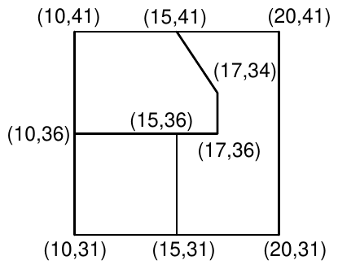
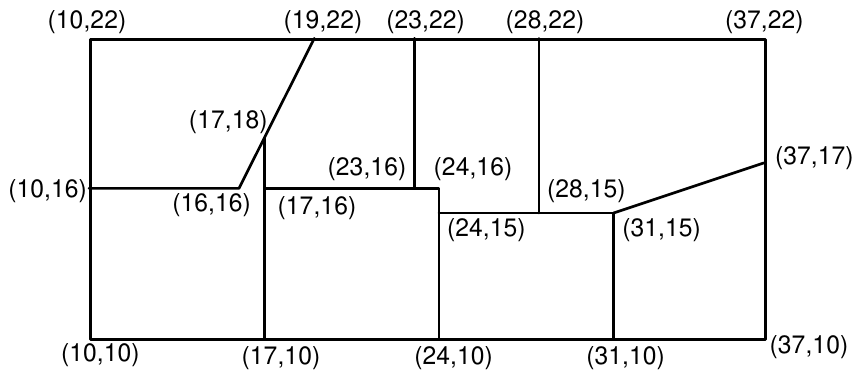

1993 ACM International Collegiate Programming Contest Finals · Problem B
A subdivision consists of plots of land with each plot having a polygonal boundary. A surveyor has surveyed the plots, and has given the location of all boundary lines. That is the only information available, however, and more information is desired about the plots in the subdivision. Specifically, planners wish to classify the lots by the number of boundary line segments (B=3,4,5,…) on the perimeter of the lots.
Write a program that will take as input the surveyor’s data and produce as output the desired information about the nature of the lots in the subdivision.
The input file consists of several data sets. Each data set begins with a line containing the number of line segments (4 ≤ N ≤ 200) in the survey. The following N lines each contain four integers representing the Cartesian (x,y) coordinate pairs for the N points of a boundary line segment. The input file is terminated with a 0.
For each data set, provide output listing the number of lots in each classification of boundary line segment counts (B=3,4,5,…). Do not include in your output those cases in which the classification has no members. The output for each data set will begin with a line containing an appropriately labeled data set number. Output for successive data sets will be separated by a blank line.
Assumptions:
Figures 1 and 2 show two hypothetical subdivisions. In Figure 1 there are 12 boundary line segments, and in Figure 2 there are 27. The sample input file below contains the data for these two test cases. The plot in the upper left hand corner of Figure 2 has one line running from (16,16) to (17,18) and another from (17,18) to (19,22). Thus this lot has a perimeter comprised of 5 boundary line segments, though geometrically the lot is a 4-sided region. Similarly the perimeter of the plot in the upper left hand corner of Figure 1 is comprised of 6 boundary line segments, though the lot is pentagonal in shape.


12 10 41 15 41 15 41 20 41 10 36 15 36 15 36 17 36 10 31 15 31 15 31 20 31 10 41 10 36 10 36 10 31 15 41 17 34 17 34 17 36 15 36 15 31 20 41 20 31 27 10 22 19 22 19 22 23 22 23 22 28 22 28 22 37 22 10 16 16 16 17 16 23 16 23 16 24 16 24 15 28 15 28 15 31 15 10 10 17 10 17 10 24 10 24 10 31 10 31 10 37 10 10 22 10 16 10 16 10 10 17 18 17 16 17 16 17 10 24 16 24 15 24 15 24 10 23 22 23 16 28 22 28 15 31 15 31 10 37 22 37 17 37 17 37 10 16 16 17 18 17 18 19 22 31 15 37 17 0
Case 1 Number of lots with perimeter consisting of 4 surveyor’s lines = 1 Number of lots with perimeter consisting of 6 surveyor’s lines = 1 Number of lots with perimeter consisting of 7 surveyor’s lines = 1 Total number of lots = 3 Case 2 Number of lots with perimeter consisting of 4 surveyor’s lines = 1 Number of lots with perimeter consisting of 5 surveyor’s lines = 4 Number of lots with perimeter consisting of 6 surveyor’s lines = 3 Total number of lots = 8